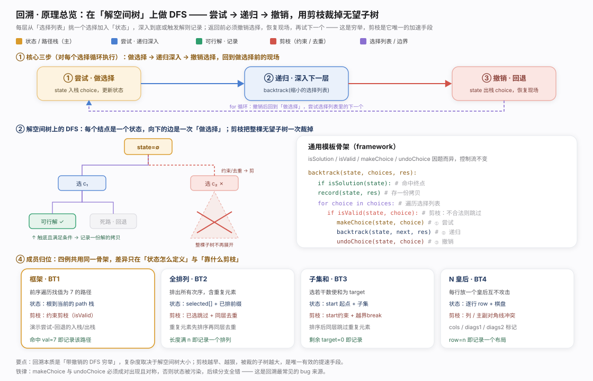
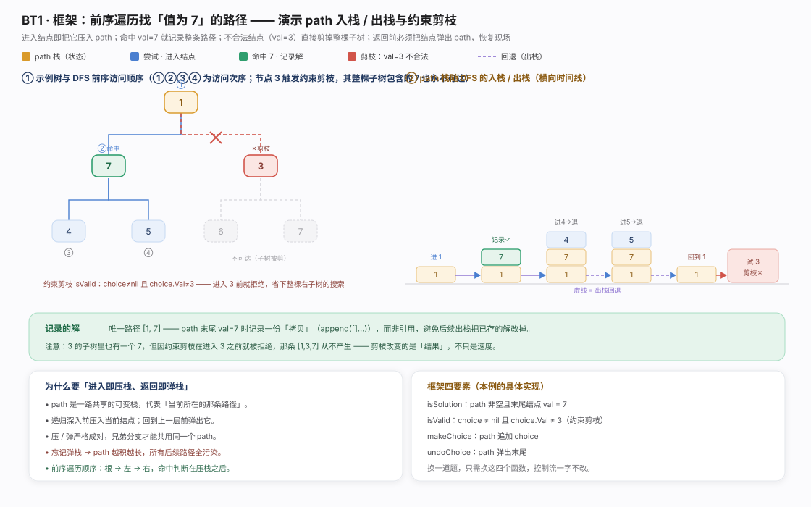
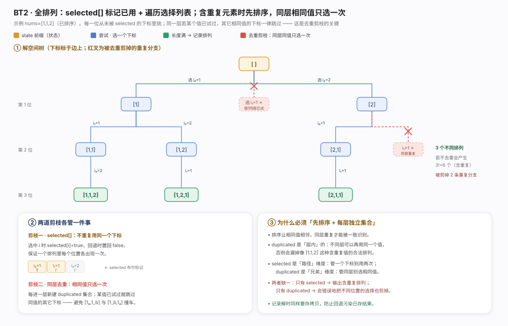
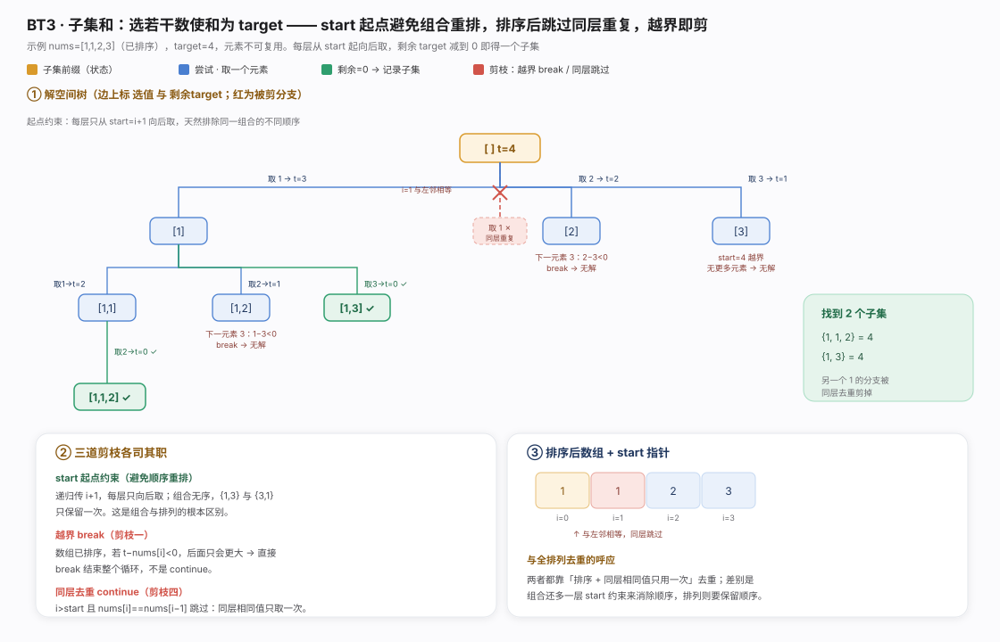
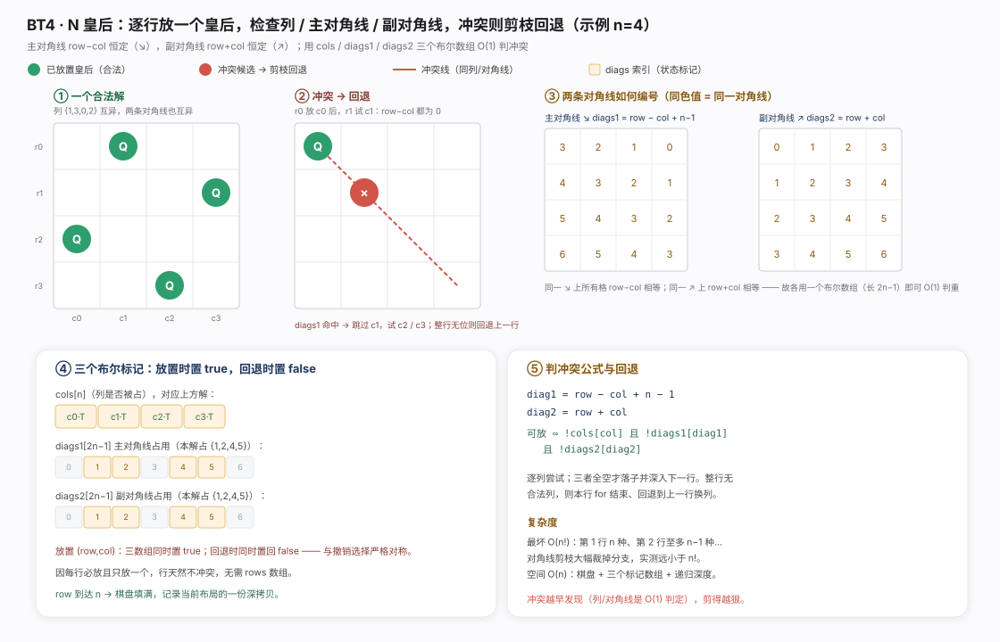
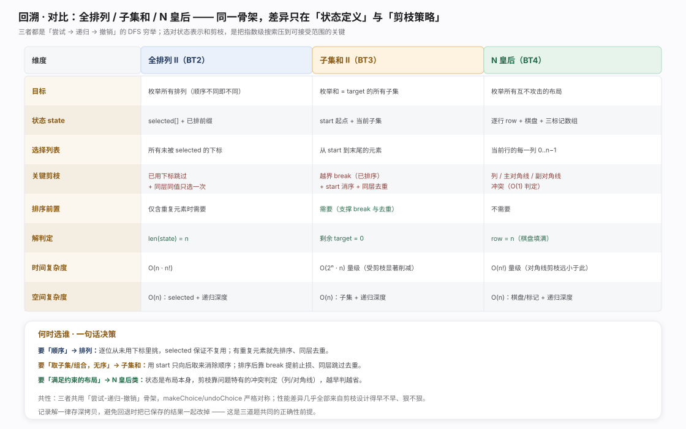

回溯是带撤销的深度优先穷举：把候选解组织成解空间树，沿路径「做选择」深入、命中即记录、再回退撤销试下一分支。骨架恒为三步 makeChoice→backtrack→undoChoice，通用模板抽象成 isSolution/isValid/makeChoice/undoChoice 四钩子，换题只改钩子、控制流不动。
本质是穷举，复杂度取决于解空间树规模，剪枝是唯一加速手段：isValid 在选择前把不可能通向解的整棵子树裁掉。分两类——约束剪枝(违反题目约束如 N 皇后对角线冲突)与去重剪枝(不同选择产生相同结果)。四例差异只在「状态怎么定义」和「靠什么剪枝」。

框架例(前序遍历找所有值为 7 的路径)演示尝试-回退最小闭环。状态是共享路径栈：入结点 makeChoice 压栈、返回前 undoChoice 弹栈——压栈弹栈必须严格成对，忘弹栈会污染后续所有分支（回溯最常见 bug）。isValid 约束 choice.Val != 3 使值 3 结点在进入前被拒、整棵子树不展开——剪枝改变的不只是速度还有结果集。记录解须存路径深拷贝而非引用，否则回退弹栈会改掉已保存的解。
package chapter_backtracking
import (
. "helloalgo/pkg"
)
/* 前序遍历：例题一 */
func preOrderI(root *TreeNode, res *[]*TreeNode) {
if root == nil {
return
}
if (root.Val).(int) == 7 {
// 记录解
*res = append(*res, root)
}
preOrderI(root.Left, res)
preOrderI(root.Right, res)
}package chapter_backtracking
import (
. "helloalgo/pkg"
)
/* 判断当前状态是否为解 */
func isSolution(state *[]*TreeNode) bool {
return len(*state) != 0 && (*state)[len(*state)-1].Val == 7
}
/* 记录解 */
func recordSolution(state *[]*TreeNode, res *[][]*TreeNode) {
*res = append(*res, append([]*TreeNode{}, *state...))
}
/* 判断在当前状态下，该选择是否合法 */
func isValid(state *[]*TreeNode, choice *TreeNode) bool {
return choice != nil && choice.Val != 3
}
/* 更新状态 */
func makeChoice(state *[]*TreeNode, choice *TreeNode) {
*state = append(*state, choice)
}
/* 恢复状态 */
func undoChoice(state *[]*TreeNode, choice *TreeNode) {
*state = (*state)[:len(*state)-1]
}
/* 回溯算法：例题三 */
func backtrackIII(state *[]*TreeNode, choices *[]*TreeNode, res *[][]*TreeNode) {
// 检查是否为解
if isSolution(state) {
// 记录解
recordSolution(state, res)
}
// 遍历所有选择
for _, choice := range *choices {
// 剪枝：检查选择是否合法
if isValid(state, choice) {
// 尝试：做出选择，更新状态
makeChoice(state, choice)
// 进行下一轮选择
temp := make([]*TreeNode, 0)
temp = append(temp, choice.Left, choice.Right)
backtrackIII(state, &temp, res)
// 回退：撤销选择，恢复到之前的状态
undoChoice(state, choice)
}
}
}
全排列枚举所有次序。状态是已排前缀 + selected[] 布尔数组：选中下标置 true、回退置 false，保证每位置只用一次；前缀满即记录。剪枝一(不复用下标)由 selected[] 完成。含重复元素时需剪枝二同层去重：先排序让相同值相邻、每层维护 duplicated 集合跳过已试值。关键 selected 管「路径」维度、duplicated 管「兄弟」维度且每层新建不跨层（否则漏掉如 [1,1,2] 的合法排列），二者缺一不可。
package chapter_backtracking
/* 回溯算法：全排列 I */
func backtrackI(state *[]int, choices *[]int, selected *[]bool, res *[][]int) {
// 当状态长度等于元素数量时，记录解
if len(*state) == len(*choices) {
newState := append([]int{}, *state...)
*res = append(*res, newState)
}
// 遍历所有选择
for i := 0; i < len(*choices); i++ {
choice := (*choices)[i]
// 剪枝：不允许重复选择元素
if !(*selected)[i] {
// 尝试：做出选择，更新状态
(*selected)[i] = true
*state = append(*state, choice)
// 进行下一轮选择
backtrackI(state, choices, selected, res)
// 回退：撤销选择，恢复到之前的状态
(*selected)[i] = false
*state = (*state)[:len(*state)-1]
}
}
}
/* 全排列 I */
func permutationsI(nums []int) [][]int {
res := make([][]int, 0)
state := make([]int, 0)
selected := make([]bool, len(nums))
backtrackI(&state, &nums, &selected, &res)
return res
}package chapter_backtracking
/* 回溯算法：全排列 II */
func backtrackII(state *[]int, choices *[]int, selected *[]bool, res *[][]int) {
// 当状态长度等于元素数量时，记录解
if len(*state) == len(*choices) {
newState := append([]int{}, *state...)
*res = append(*res, newState)
}
// 遍历所有选择
duplicated := make(map[int]struct{}, 0)
for i := 0; i < len(*choices); i++ {
choice := (*choices)[i]
// 剪枝：不允许重复选择元素 且 不允许重复选择相等元素
if _, ok := duplicated[choice]; !ok && !(*selected)[i] {
// 尝试：做出选择，更新状态
// 记录选择过的元素值
duplicated[choice] = struct{}{}
(*selected)[i] = true
*state = append(*state, choice)
// 进行下一轮选择
backtrackII(state, choices, selected, res)
// 回退：撤销选择，恢复到之前的状态
(*selected)[i] = false
*state = (*state)[:len(*state)-1]
}
}
}
/* 全排列 II */
func permutationsII(nums []int) [][]int {
res := make([][]int, 0)
state := make([]int, 0)
selected := make([]bool, len(nums))
backtrackII(&state, &nums, &selected, &res)
return res
}
子集和选若干数使和为 target。组合无序({1,3} 与 {3,1} 同一)，引入 start 起点约束：每层只从 start 向后取，天然消除同组合的排列顺序——这是组合与排列最根本区别。剩余 target 减到 0 即记录。两道剪枝：越界剪枝先排序，target-nums[i]<0 时后面更大直接 break(非 continue)；同层去重 i>start && nums[i]==nums[i-1] 跳过。与排列去重同源（排序+同层相同值只用一次），区别是组合多一层 start 消序。
package chapter_backtracking
import "sort"
/* 回溯算法：子集和 I */
func backtrackSubsetSumI(start, target int, state, choices *[]int, res *[][]int) {
// 子集和等于 target 时，记录解
if target == 0 {
newState := append([]int{}, *state...)
*res = append(*res, newState)
return
}
// 遍历所有选择
// 剪枝二：从 start 开始遍历，避免生成重复子集
for i := start; i < len(*choices); i++ {
// 剪枝一：若子集和超过 target ，则直接结束循环
// 这是因为数组已排序，后边元素更大，子集和一定超过 target
if target-(*choices)[i] < 0 {
break
}
// 尝试：做出选择，更新 target, start
*state = append(*state, (*choices)[i])
// 进行下一轮选择
backtrackSubsetSumI(i, target-(*choices)[i], state, choices, res)
// 回退：撤销选择，恢复到之前的状态
*state = (*state)[:len(*state)-1]
}
}
/* 求解子集和 I */
func subsetSumI(nums []int, target int) [][]int {
state := make([]int, 0) // 状态（子集）
sort.Ints(nums) // 对 nums 进行排序
start := 0 // 遍历起始点
res := make([][]int, 0) // 结果列表（子集列表）
backtrackSubsetSumI(start, target, &state, &nums, &res)
return res
}package chapter_backtracking
import "sort"
/* 回溯算法：子集和 II */
func backtrackSubsetSumII(start, target int, state, choices *[]int, res *[][]int) {
// 子集和等于 target 时，记录解
if target == 0 {
newState := append([]int{}, *state...)
*res = append(*res, newState)
return
}
// 遍历所有选择
// 剪枝二：从 start 开始遍历，避免生成重复子集
// 剪枝三：从 start 开始遍历，避免重复选择同一元素
for i := start; i < len(*choices); i++ {
// 剪枝一：若子集和超过 target ，则直接结束循环
// 这是因为数组已排序，后边元素更大，子集和一定超过 target
if target-(*choices)[i] < 0 {
break
}
// 剪枝四：如果该元素与左边元素相等，说明该搜索分支重复，直接跳过
if i > start && (*choices)[i] == (*choices)[i-1] {
continue
}
// 尝试：做出选择，更新 target, start
*state = append(*state, (*choices)[i])
// 进行下一轮选择
backtrackSubsetSumII(i+1, target-(*choices)[i], state, choices, res)
// 回退：撤销选择，恢复到之前的状态
*state = (*state)[:len(*state)-1]
}
}
/* 求解子集和 II */
func subsetSumII(nums []int, target int) [][]int {
state := make([]int, 0) // 状态（子集）
sort.Ints(nums) // 对 nums 进行排序
start := 0 // 遍历起始点
res := make([][]int, 0) // 结果列表（子集列表）
backtrackSubsetSumII(start, target, &state, &nums, &res)
return res
}
N 皇后在 n×n 棋盘放 n 个互不攻击皇后。状态按行推进：每行逐列尝试、合法落子深入 row+1，row==n 填满即记录深拷贝。每行必放且只放一个，行方向天然不冲突。剪枝靠三布尔数组 O(1) 判冲突：cols[col]、diags1[row-col+n-1](主对角 ↘)、diags2[row+col](副对角 ↗)——同对角线 row-col 或 row+col 恒定，各用长 2n-1 数组标记。落子/回退时三数组同置对称。最坏 O(n!) 量级，但对角线 O(1) 判定、冲突发现早，实测被剪分支极多远小于 n!。
package chapter_backtracking
/* 回溯算法：n 皇后 */
func backtrack(row, n int, state *[][]string, res *[][][]string, cols, diags1, diags2 *[]bool) {
// 当放置完所有行时，记录解
if row == n {
newState := make([][]string, len(*state))
for i, _ := range newState {
newState[i] = make([]string, len((*state)[0]))
copy(newState[i], (*state)[i])
}
*res = append(*res, newState)
return
}
// 遍历所有列
for col := 0; col < n; col++ {
// 计算该格子对应的主对角线和次对角线
diag1 := row - col + n - 1
diag2 := row + col
// 剪枝：不允许该格子所在列、主对角线、次对角线上存在皇后
if !(*cols)[col] && !(*diags1)[diag1] && !(*diags2)[diag2] {
// 尝试：将皇后放置在该格子
(*state)[row][col] = "Q"
(*cols)[col], (*diags1)[diag1], (*diags2)[diag2] = true, true, true
// 放置下一行
backtrack(row+1, n, state, res, cols, diags1, diags2)
// 回退：将该格子恢复为空位
(*state)[row][col] = "#"
(*cols)[col], (*diags1)[diag1], (*diags2)[diag2] = false, false, false
}
}
}
/* 求解 n 皇后 */
func nQueens(n int) [][][]string {
// 初始化 n*n 大小的棋盘，其中 'Q' 代表皇后，'#' 代表空位
state := make([][]string, n)
for i := 0; i < n; i++ {
row := make([]string, n)
for i := 0; i < n; i++ {
row[i] = "#"
}
state[i] = row
}
// 记录列是否有皇后
cols := make([]bool, n)
diags1 := make([]bool, 2*n-1)
diags2 := make([]bool, 2*n-1)
res := make([][][]string, 0)
backtrack(0, n, &state, &res, &cols, &diags1, &diags2)
return res
}
一句话决策：枚举「顺序」用排列(selected 防复用、重复元素靠同层去重)；枚举「无序子集/组合」用子集和式(start 向后取消序、排序后 break 止损+同层跳过去重)；枚举「满足约束的布局」(N 皇后/数独)状态即布局本身、靠问题特有冲突判定(列/对角线)越早判越省。三者共用「尝试-递归-撤销」骨架，makeChoice/undoChoice 必须对称、记录解一律深拷贝防污染——正确性前提。性能差异几乎全来自剪枝早不早、狠不狠。与分治/动规同属递归家族，区别在回溯系统遍历整个解空间并允许退回换路（详见对比图）。